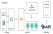

![hot]()


文章推荐
-

新
前端监控系统之“实战篇”
决定开始动笔写实战篇的时候，望了望时间，距离上一篇文章《前端监控系统之“理论篇”》差不多过去4个月的时间啦，时间过得可真快。在这期间，还有朋友留言给我：前端监控系统实战篇还会继续写吗？我回答着：写，一定会写。之所以没那么着急写，一方面：因为这段时间工作确实...
-
自媒体博客的出路在哪里？
现在是2018年12月26号凌晨，距博客创建之时已有4年之久。回想这4年一路走来，有过喜悦、有过努力、有过迷茫... 曾经想的是，能有朝一日在“个人博客”这个关键词超越青姐的博客，而现在博客的百度排名确实也超...
-
聊聊我们说的网站优化
前言：网站打开的快慢，在一定程度上影响着用户的流失率。据不完全统计网站打开时间超过3s，就有将近40%的用户会选择关闭。因此，加载速度也成为了，搜索引擎排序中的一项因素。让我们一起看看有哪些优化点是我们值得关注的！...
-
前端MVVM框架之“Vue.js组件篇”
前言: 相信看过上一篇“Vue.js入门”的同学,对Vue.js大概有了一定程度上的了解。废话不多说,今天我们接着聊Vue.js的组件系统! 为什么说:组件系统是Vue.js中一个核心的功能呢? 通俗点说:它能帮助我们提升整个项目的开发效率,能够把页面抽象成多个相对独立的模...
-
Webpack之“多页面开发”最佳实战
前言:相信之前看过这篇文章:前端构建工具之“Webpack”的朋友,对于Webpack有了一定的了解。那么今天 就跟大家分享下:如何利用webpack,来进行多页面项目实战开发。 一、项目初始化安装 1、先安装node.js 和 webpack 第一步:如果没有安装node的朋友,可以去官网...
-
利用百度数据来做SEO优化系列（二）
最近一直忙着公司项目的上线，以及还没来得及跟大家分享，刚好趁着5.1放假，有时间就接着上次的话题来跟大家一起分享。 在利用百度数据来做SEO优化系列（一）这篇文章中提到了，现在做SEO优化，不能有以前的老思维来做seo优化了。现在要围绕“用户体验”来做...
-
如何学习网页制作（个人经验）
最近看了聪哥的（SEO白手起家的创业录）有很深的感触!我觉得有一些话说得很有道理：如果你分享的东西，不是你亲自经历过，或者实践过的话， 你的分享是很难打动别人和得到别人的认同。其实最真实的故事，才是最有价值！ 还记得刚接触网页制作的时候还是大二...
-
站长们，还在发帖吗？要想成功该转换思维了
在正式开始本文之前，先简单介绍一下个人背景：06年就开始研究SEO、站长圈，最好的时候个人博客“SEO”关键词排到百度第二页。后来运营过门户网站、B2C商城，是一名在站长行当里摸爬滚打超过8年的老鸟，现在有自己运营的公司。 之所以说那么多，是想表明我不...
-
学习seo的一些心得
从学习SEO起到现在差不多两个月时间了，也算是慢慢的走向seoer这个行业。在学习SEO这个过程中，我发现SEO这个行业相对于其它行业比较抽象。不像学其它的技术一样，你马上学出来，就能看到实战效果，而SEO却截然不同。因为SEO需要用一定时间去等结果，可能最...
{kind=link}
{kind=link}
{kind=link}
{kind=link}
{kind=link}
{kind=link}
{kind=link}
{kind=link}
{kind=link}
{kind=link}
关注博客
点击排行
最新评论
 数据加载中...
数据加载中...
一路走来
2014-03-07
v1.0 Beta版本发布
2014-03-23
v1.0 版本正式发布：
完善网站基本功能：文章页添加多说留言插件...2014-08-20
v2.0 版本正式发布：
博客风格进行改版，并优化网站细节。2015-04-06
v3.0 Beta版本发布：
对栏目进行改版布局，并添加新功能：百度站内搜索和段亮博客官方微信公众号！2016-08-14
v3.0 版本正式发布：
对网站整体风格进行改版，并对代码进行重新优化构建。增加网站站内搜索功能！点击查看2018-09-11
v4.0 Beta版本发布：
系统架构重构，新增会员系统、评论功能、支持在线视频观看！点击查看2018-10-05
v4.0 版本正式发布：
重构UI、视频模块，支持免费视频在线试看，优化视频观看学习体验！点击查看2019-06-29
v4.1版本更新：
支持VIP视频、会员、文章，单独付费购买，完善用户体验！2019-10-13
v4.2版本更新：
1、支持留言websocket实时回复。
2、支持系统消息推送。
3、解决第三方登录bug。